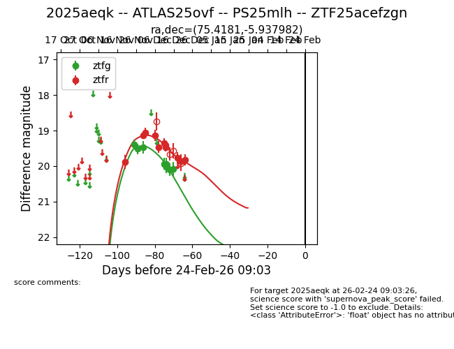
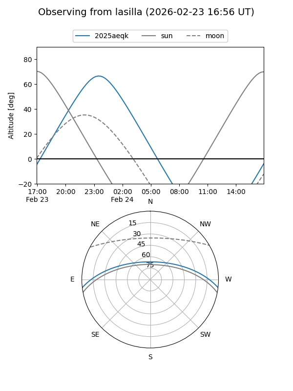
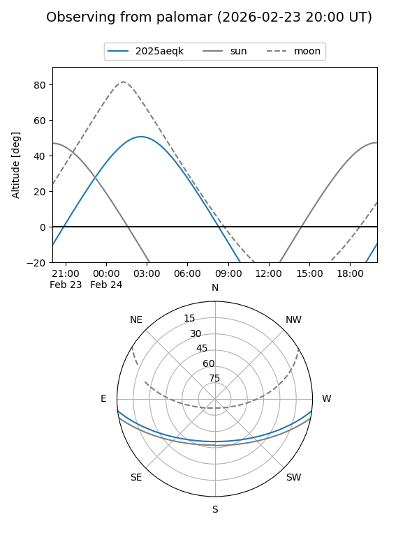
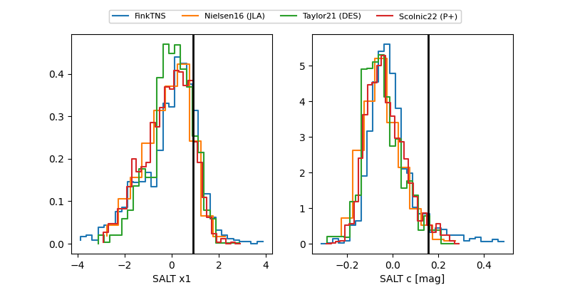

2025aeqk
Target 2025aeqk at 2025-12-31 17:00
Aliases and brokers:
FINK:
Lasair:
ALeRCE:
TNS:
YSE:
alt names
ZTF25acefzgn (ztf,fink_ztf)
2025aeqk (tns,yse)
Coordinates:
equatorial (ra, dec) = 75.4181,-5.93798
equatorial (HMS+DMS) = 05:01:40.34,-05:56:16.74
galactic (l, b) = (205.3857,-27.07233)
Flags:
Photometry:
last ztfg=20.08, ztfr=19.82
8 ztfg, 11 ztfr detections
Lightcurve

Visibility


Additional plots
